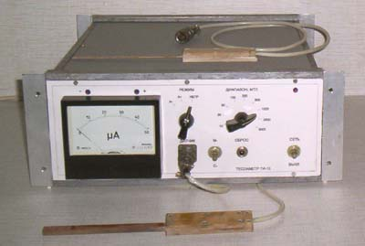
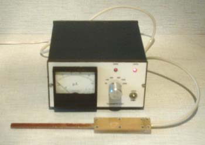
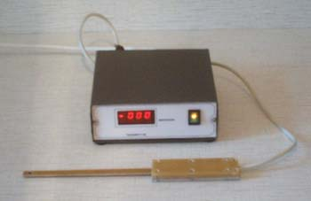
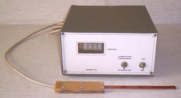
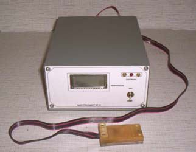
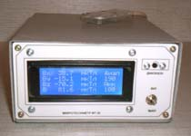
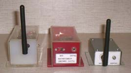
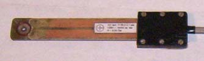
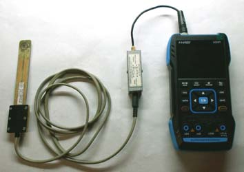
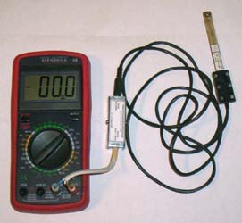

Приборы для измерения магнитных полей
Аналоговый импульсный тесламетр с датчиком Холла типа ПХЭ для измерения индукции магнитного поля

Диапазон измеряемых значений магнитной индукции 0 ... +5000 мТл, девять поддиапазонов, индикатор полярности (постоянное, переменное, импульсное магнитное поле).
Аналоговый тесламетр с датчиком Холла типа ПХЭ для измерения индукции магнитного поля

Диапазон измеряемых значений магнитной индукции 0 ... +2000 мТл, шесть поддиапазонов, индикатор полярности (постоянное и переменное магнитное поле).
Цифровой тесламетр с датчиком Холла ДХК-0.5А для измерения индукции магнитного поля

Диапазон измеряемых значений магнитной индукции 0 ... +1999 мТл (3 1/2 цифры и индикатор полярности) (постоянное магнитное поле).
Цифровой тесламетр с датчиком Холла типа ПХЭ для измерения индукции магнитного поля

Диапазон измеряемых значений магнитной индукции 0 ... +1999 мТл (3 1/2 цифры и индикатор полярности) (постоянное и переменное магнитное поле).

Диапазон измеряемых значений магнитной индукции 0 ... +199.9 мкТл (3 1/2 цифры и индикатор полярности) (постоянное и переменное магнитное поле).

Диапазон измеряемых значений индукции постоянного магнитного поля до 0 ... +810 мкТл (3 компоненты магнитной индукции с учетом знака и полный модуль).
Диапазон измеряемых значений величины индукции постоянного магнитного поля 0 ... +199.9 мкТл (3 1/2 цифры и индикатор полярности) (четыре канала - два датчика и две взаимноортогональных компоненты), диапазон измеряемых значений градиентов взаимноортогональных компонент индукции постоянного магнитного поля 0 ... +199.9 мкТл/м.

Диапазон измеряемых значений индукции постоянного магнитного поля до 0 ... +810 мкТл (3 компоненты магнитной индукции с учетом знака и полный модуль). Передача данных на удаленный до 100 м компьютер по радиоканалу 2.4 ГГц.
Тесламетры предназначены для измерения и контроля индукции магнитного поля постоянных магнитов или магнитных систем, амплитуды индукции импульсных магнитных полей (например, в установках намагничивания и размагничивания постоянных магнитов [8]). В качестве первичного преобразователя используются датчики Холла [3, 4]. Цифровые микротесламетры предназначены для оперативного измерения и контроля магнитного поля Земли, полей рассеяния постоянных магнитов и магнитных систем, измерения магнитных полей рассеяния транспортируемых грузов, контроля магнитной обстановки, при конструировании и ремонте магнитных систем и устройств с постоянными магнитами, оценки качества размагничивания стальных изделий [9]. В качестве первичного преобразователя используется магниторезистивный датчик фирмы Honeywell [2]. Цифровой пешеходный двухкоординатный магнитометр-градиентометр предназначен для оперативного измерения и контроля величины индукции постоянного магнитного поля (сопоставимого с магнитным полем Земли), а также градиента магнитной индукции. В качестве первичного преобразователя используются два магниторезистивных датчика фирмы Honeywell [2]. Магнитометр с передачей данных к компьютеру по радиоканалу может использоваться для удаленного мониторинга слабых постоянных магнитных полей.
Измерение индукции переменного магнитного поля с помощью измерительной катушки


Измерение переменных и импульсных магнитных полей можно производить с помощью различных измерительных катушек. Напряжение на выводах измерительной катушки, помещенной в переменное магнитное поле, пропорционально магнитной индукции и частоте. Коэффициент преобразования на заданной частоте может быть либо рассчитан, либо получен экспериментальным путем при калибровке катушки в заданном магнитном поле.

Сигнал с измерительной катушки может быть подан на вход измерительного прибора (например, осциллографа) через интегратор. При правильно подобранной постоянной времени интегратора измеренный сигнал соответствует величине магнитной индукции. В качестве интегратора может использоваться простая RC-цепь.

Напряжение на выводах катушек может измеряться либо напрямую с помощью вольтметра или осциллографа, либо предварительно обрабатываться с помощью интеграторов для измерения изменений магнитного потока или амплитудных значений магнитной индукции.
Магнитно-механический указатель-индикатор магнитных полюсов и направления магнитного поля

Магнитно-механический указатель-индикатор магнитных полюсов предназначен для оперативного определения магнитных полюсов постоянных магнитов, направления постоянного магнитного поля, наличия переменного магнитного поля, разделения намагниченных, ненамагниченных и немагнитных объектов.
Помимо прямых измерений магнитной индукции (и ее градиента), приборы могут применяться для создания измерительных установок и комплексов, например:
1. Комплекс для измерения остаточной магнитной индукции постоянных магнитов с прямоугольной петлей гистерезиса
Комплекс состоит из тесламетра и программы A_Magnet [1]. Измерять остаточную магнитную индукцию образцов постоянных магнитов с высокой коэрцитивной силой (прямоугольной петлей гистерезиса) можно, не создавая замкнутую магнитную цепь. Достаточно измерить с помощью тесламетра величину магнитной индукции в характерной для образца заданной формы точке. Например, для цилиндрического магнита - в центре торца, для кольцевого - в центре отверстия. Затем с помощью программы A_Magnet по измеренному значению магнитной индукции в характерной точке рассчитывается остаточная индукция следующим образом. Вначале в программе по заданным размерам образца и при значении остаточной индукции, равном 1 Тл, производится расчет величины магнитной индукции в характерной точке, где проводились измерения. Измеренное значение делится на рассчитанное, при этом получается величина остаточной индукции образца.
2. Установки для изучения топографии магнитного поля
2.1. Установка состоит из поворотного столика [6] и тесламетра. Она позволяет снимать топографию осесимметричных магнитных систем вручную. Автоматизировать измерения можно, если подключить датчик угла поворотного столика и внешний выход тесламетра к двухкоординатному самописцу или через блок АЦП к компьютеру.
2.2. Установка на основе фрезерного станка и тесламетра [7] позволяет вручную проводить сканирование магнитных полей по трем прямоугольным координатам, а при использовании поворотного стола - в цилиндрической системе координат.
3. Магнитный гистериограф для изучения свойств магнитных материалов
Гистериограф может быть собран из малогабаритного электромагнита [5] с блоком питания и двух тесламетров, имеющих внешний выход, который подключается к двухкоординатному самописцу или к компьютеру через блок АЦП-ЦАП. С помощью гистериографа можно снимать петли гистерезиса магнитных материалов и находить значения остаточной индукции, коэрцитивной силы и другие параметры. Для взвешивания образцов могут использоваться электронные весы [10].
Ссылки:
07.12.2005
04.09.2006
08.02.2007
22.06.2007
17.02.2008
09.08.2010
25.02.2013
22.12.2017
06.01.2018
17.12.2024
13.05.2026
Альтернативные источники
энергии
Компьютеры и
Интернет
Магнитные поля
Механотронные системы
Перспективные
разработки
Электроника и
технология